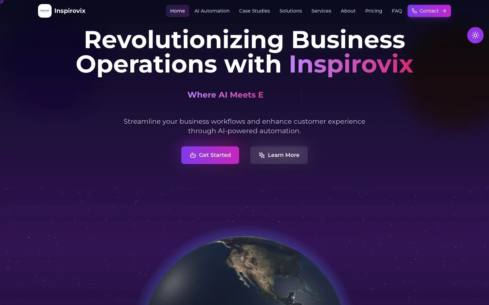
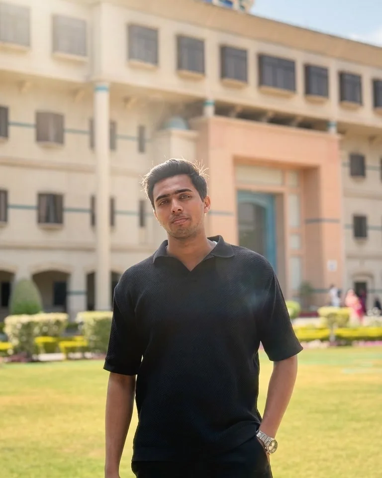

GreenRock
- Built the Pakistan team from nothing and hired all nine
- Own operations, technology, hiring and performance
- Report to the owner; we deliver trading automation for the Saudi Exchange (Tadawul)
Jun 2026: 0Today: 9
One is a team I built for someone else's business. The other is my own business. Both started at zero.

Sites, stores and platforms I designed and built, from Islamabad for clients in Pakistan, the UK, the UAE, Singapore and Germany.
Every answer traces back to its source. That was the rule for the systems below, and it's the one I build to.
I designed and built the pipeline end to end: grounding, latency and API cost, single sign-on and role-based permissions. I also built the platform's inventory system.
No screens: they contain patient data.
A case-management system with an assistant that pulls the right case documents and drafts summaries, so a lawyer can check every line.
Also: EmotiVerse, AI companions with a consistent personality, and an MLOps weather pipeline.
Everything here I've used hands-on in shipped work. The last group is what my teams build in, under my management.

Software engineering at FAST-NUCES, Dean's List four times. Freelancing paid for the first projects. The rest grew from there.
Built the team from zero and hired all nine. Own ops, tech and hiring.
AI clinical decision support used live by clinicians, and an inventory system for a US hospital platform.
Web and AI studio. GWM Pakistan, GuruIsOnline, Somara Labs, Exec Chauffeur Group and 50+ more clients.
200+ web, mobile and automation projects, 4.9★ feedback from 97 clients, grown into an agency.
Enterprise platforms for ALDAR in the UAE. Led 8 developers moving a hospital system's frontend to React.
Dean's List 4×. President, FAST Blockchain Society. Before that: National Science Bowl Islamabad winners, 2020.
Built from Islamabad for founders and companies across North America, Europe, the Gulf and Asia.
★★★★★Word for word from Fiverr, Aug 2024 – Aug 2025. Many clients came back for more than one project, and studio and direct work isn’t reviewed there. That’s how 97 clients add up to 200+ projects.
Music is the thing I'd do for free. It's also where I learned to finish things, ship them and let people judge.